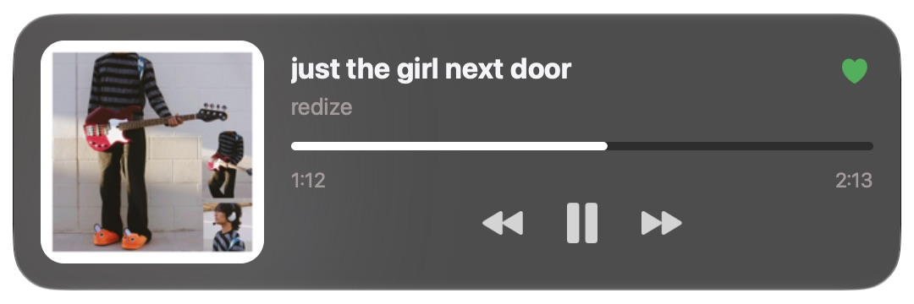
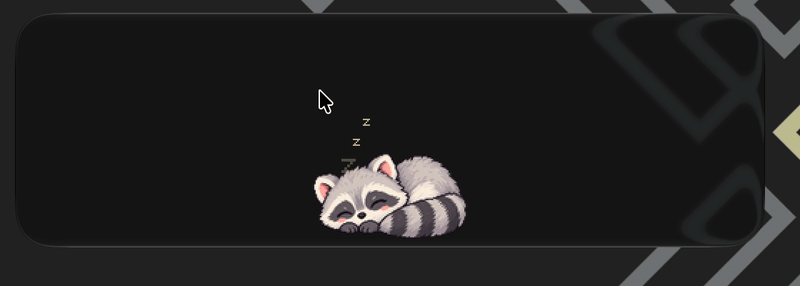

A desktop widget for macOS
Your music,
on your desktop.
Album art, controls and synced lyrics, right next to your files. Wallify follows Spotify or anything in Now Playing, and keeps a pixel cat company when the music stops.
Free and open source · macOS 12 or later · Apple silicon
A live preview with made-up songs. Try the buttons and sizes.
Straight from the desktop
Looks right at home.


Features
Small widget.
Lots inside.
-
Synced lyrics
The line being sung slides in under the progress bar, right on the beat. Gaps show a quiet note instead of flickering back to the clock.
-
Like and Up Next
Connect Spotify to save tracks with one click and see what's coming up next.
-
Colors from the cover
An ambient glow and aurora follow the album art, on Apple's glass or Wallify's own material.
-
Scroll to adjust
Scroll over the widget to change the volume or skip around in the song.
-
Five sizes, snaps in place
From a square of album art to a 2 × 2 player. It lines up with your other desktop widgets and remembers each display.
-
Live waveform
An optional waveform on the progress bar moves with whatever is playing.
-
Media keys and menus
Point F7–F9 at Wallify, or reach everything from the menu bar and a right-click.
-
Works with VoiceOver
Track details, controls and a seekable progress slider are all readable and usable.
-
Stays current
Wallify lets you know when a new release is out. Want the newest changes? Switch to the nightly channel.
Privacy
Your music stays yours.
- No tracking, no accounts. Wallify has no analytics and no server of its own. The daily update check only asks GitHub for the latest release, and you can turn it off.
- Audio is never saved. The optional waveform reads levels live and keeps nothing.
- Lyrics are opt-in. Turning them on sends each song's title, artist and length to lrclib.net to find its lyrics.
- Your Spotify login stays on your Mac. It's kept in your Keychain, and you can disconnect at any time.
Install
Ready in a minute.
- 1Download Wallify and open the disk image.
- 2Drag Wallify to Applications.
- 3The first time, right-click Wallify and choose Open. It's open source and not notarized by Apple yet, so macOS asks you to confirm once.
- 4Allow it to control Spotify when asked. A short setup screen walks you through the rest.